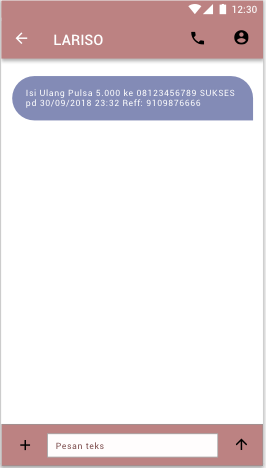
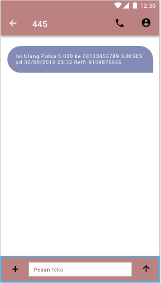
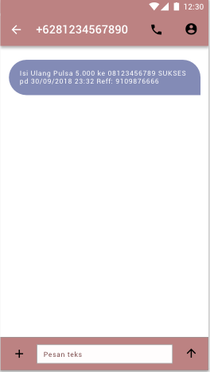
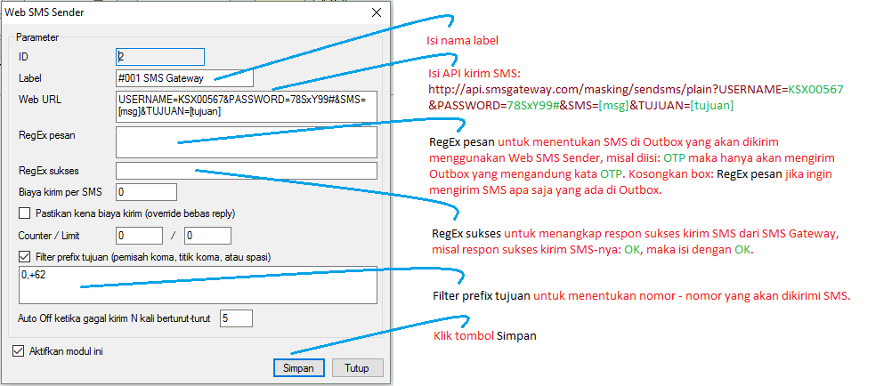

Web SMS Sender
Anda ingin SMS yang dikirimkan ke Reseller Anda pengirimnya berupa nama perusahaan atau server Anda (SMS Masking) misal LARISO, DUNIA PULSA?...; atau pengirimnya berupa Short Number (3, 4 atau 5 digit angka), misal 445, 8888, 89900?...; atau Anda mengalami gendala kirim SMS dengan modem dan chip milik sendiri, misal sering gagal kirim atau SMS terkirim namun tidak sampai ke Reseller?...; Kini dengan OtomaX Anda dapat mewujudkan dan menanggulanginya, sebab mulai versi 3.8.3 telah tersedia sebuah fitur baru bernama Web SMS Sender.
Dengan modul Web SMS Sender memungkinkan OtomaX terhubung dengan penyedia layanan SMS Gateway
yang menyediakan layanan SMS Masking (LARISO), SMS Short Number (445) ataupun SMS Long Number
(+6281234567890) dengan metode HTTP GET sehingga pengirim SMS bisa berupa nama server Anda, bisa berupa
angka pendek (3, 4 atau 5 digit) dan bisa juga berupa angka panjang (+6281234567890) sekaligus bisa menjadi
salah satu solusi permasalahan gendala kirim SMS sering gagal kirim. Pengirim SMS di Inbox HandPhone
Reseller Anda akan tampak seperti di bawah ini:



Fitur ini hanya tersedia di OtomaX edisi Ultimate klik disini jadi bila OtomaX Anda bukan edisi tersebut lakukan upgrade ke edisi Ultimate dahulu klik disini; dan apabila belum memiliki OtomaX lakukan pembelian dahulu klik disini; dan apabila versi OtomaX Anda belum 3.8.3 lakukan update dahulu klik disini.
Adapun langkah - langkah mensetting Web SMS Sender ialah sebagai berikut:
- Pastikan Anda telah mendaftar layanan SMS Gateway di penyedianya (SMS Masking, SMS Short Number atau SMS Long Number). Anda bebas memilih SMS Gateway mana saja, untuk mencarinya klik disini
-
Setelah mendaftar Anda akan mendapatkan username, password untuk menghubungkan OtomaX dengan SMS Gateway
berikut API-nya. Misalnya kita mendapatkan:
Username KSX00567 Password 78SxY99# API kirim SMS http://api.smsgateway.com/masking/sendsms/plain?USERNAME=username&PASSWORD=password&SMS=sms&TUJUAN=tujuan
Jika Anda ingin mengetahui API untuk kirim SMS, silahkan hubungi penyedia SMS Gateway tempat Anda mendaftar, setiap penyedia memiliki API berbeda - beda.
-
Pada OtomaX klik Web SMS Sender -> klik kanan -> klik Tambah Web SMS Sender. Isi sesuai
petunjuk di gambar bawah ini:

Sesuaikan username, password dan API kirim SMS dengan yang Anda dapatkan dari penyedia SMS Gateway tempat Anda mendaftar. - Selesai.
Sebagai tambahan informasi, RegEx pesan dapat diisi lebih dari 1 kata, misal hanya ingin mengirim SMS
di Outbox yang mengandung kata OTP dan kata INFO; maka RegEx pesan isi dengan:
(OTP|INFO). Hal ini
berlaku pula untuk RegEx sukses.
Selanjutnya apabila Anda memiliki pertanyaan seputar Web SMS Sender silahkan klik disini; dan apabila ingin mengetahui berapa biaya layanan SMS Gateway, Anda bisa menanyakan langsung ke penyedianya.
Catatan: mulai versi 3.8.4 ditambahkan beberapa parameter yang dapat digunakan di Web SMS Sender, selengkapnya klik disini.